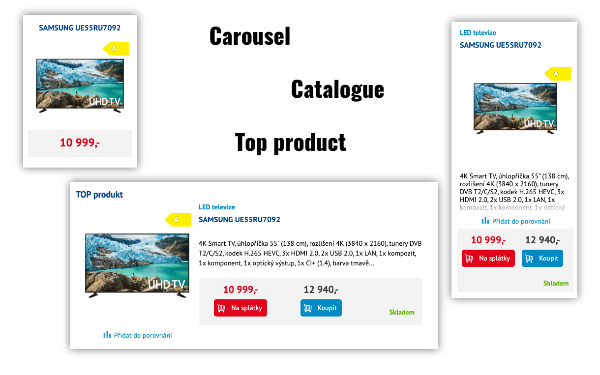
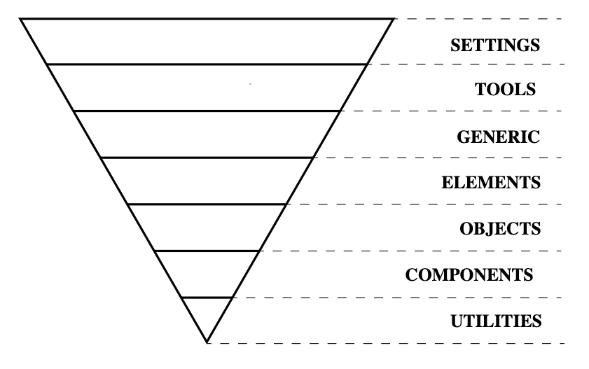

CSS best practices
Petr Koláček
Chceme psát CSS, které bude:
- rychlé
- malé
- přehledné
- znovu použizelné
- snadno rozšiřitelné
- dobře spravovatelné
Máme rádi nové hračky
bohužel je
chceme i používat
- frameworky (Bootstrap, Foundation, Skeleton, …)
- preprocesory (LESS, SASS, Stylus, …)
- PostCSS (CSS Lint, CSS Minifier, Autoprefixer, …)
- metodologie (OOCSS, BEM, SMACSS, …)
nic nás zatím nedovedlo k cíli
Nesting
Proč se mu raději vyhýbám?
``` .detail { &-item { &:after { content: ''; position: absolute; bottom: 0; height: 30px; left: 0; right: 0; background: linear-gradient(rgba(0, 0, 0, 0), rgba(0, 0, 0, 0.1)); } form { width: 100%; max-width: 100%; padding: 2em; background: @primary_blue_light; padding: 2em; position: relative; z-index: 2; margin-bottom: -150px; } &-input { width: 70%; max-width: ~"calc(100% - 115px)"; vertical-align: top; } &-button { width: 30%; min-width: 115px; vertical-align: top; } p { font-size: 1.5rem; line-height: 1.2em; color: #fff; font-weight: 600; } } &-icons { color: @primary_blue_dark; font-size: 1.556rem; line-height: 1.1em; h2 { margin: 0 0 47px 0; } span { width: auto; display: inline-block; vertical-align: top; text-align: left; } &-icon { color: @primary_red; font-size: 3.875rem; font-weight: 600; line-height: 1.1em; text-align: right !important; } &-text { font-size: 1.750rem; line-height: 1.1em; } ul { margin: 0; li { text-align: center; } } .item { position: relative; list-style: none; text-align: center; &:first-child { &:before { display: none; } } &:last-child { span { width: auto; } } } } &-news { h2 { margin: 0 0 47px 0; } a { text-decoration: none; } ul { margin: 0; } .item { height: 100%; margin-bottom: 2em; list-style: none; background-color: #fff; -webkit-transition: all 0.75s ease; transition: all 0.75s ease; &:hover { -webkit-transform: scale(1.05); transform: scale(1.05); } &:first-child { margin-left: 0; } &:last-child { margin-right: 0; } a { position: relative; display: block; height: 100%; } } img { display: block; } &-text { padding: 1.125em 1.125em 2em 1.125em; text-align: left; h3 { font-family: "Arial", sans-serif; font-size: 1.500rem; line-height: 1.1em; margin: 0; color: @primary_blue_dark; text-transform: none; } } &-cat { font-family: "Arial", sans-serif; font-size: 0.875rem; text-transform: uppercase; color: @primary_green; } &-data { font-size: 1rem; line-height: 2em; color: #999; } } } ```
nepřehlednost - specificita selektorů - vyhledávání
Specificita selektorů
Držte se při zemi
Myslete v modulech
Dodržujte konvence

CSS Reset
Jde to i bez něj
Reset - Normalize - ???
- Reset CSS - Eric A. Meyer - 2007
- Normalize CSS - 8.0.1 umravňuje IE 10
- Modern Normalize
Těžší pojmenovat než napsat
Dejte tomu čas
Pojmenovávejte
- podle funkce - ne podle vzhledu (.btn-red)
- raději česky
- personality (celebrita, VIP)
- reclamation (reklamace - complaint)
- whisperer (našeptávač - autocomplete, suggest)
- uncolected (nevybraný)
- basket (košík - cart)
Autoprefixer
Opravdu potřebujete všechno?
``` .example { display: grid; transition: all .5s; user-select: none; background: linear-gradient(to bottom, white, black); } ```
``` .example { display: -ms-grid; display: grid; -webkit-transition: all .5s; -o-transition: all .5s; transition: all .5s; -webkit-user-select: none; -moz-user-select: none; -ms-user-select: none; user-select: none; background: -webkit-gradient(linear, left top, left bottom, from(white), to(black)); background: -o-linear-gradient(top, white, black); background: linear-gradient(to bottom, white, black); } ```
Mixiny, funkce a jiné lahůdky
Kontrolujte, co se vygeneruje
``` $class-name: span !default; $start-width: 0%; @for $var from 1 to 100 { .#{$class-name}-#{$var} { width: $start-width + $var; } } ```
``` .span-1 { width: 1%; } .span-2 { width: 2%; } .span-3 { width: 3%; } .span-4 { width: 4%; } .span-5 { width: 5%; } .span-6 { width: 6%; } .span-7 { width: 7%; } .span-8 { width: 8%; } .span-9 { width: 9%; } .span-10 { width: 10%; } .span-11 { width: 11%; } .span-12 { width: 12%; } .span-13 { width: 13%; } .span-14 { width: 14%; } .span-15 { width: 15%; } .span-16 { width: 16%; } .span-17 { width: 17%; } .span-18 { width: 18%; } .span-19 { width: 19%; } .span-20 { width: 20%; } .span-21 { width: 21%; } .span-22 { width: 22%; } .span-23 { width: 23%; } .span-24 { width: 24%; } .span-25 { width: 25%; } .span-26 { width: 26%; } .span-27 { width: 27%; } .span-28 { width: 28%; } .span-29 { width: 29%; } .span-30 { width: 30%; } .span-31 { width: 31%; } .span-32 { width: 32%; } .span-33 { width: 33%; } .span-34 { width: 34%; } .span-35 { width: 35%; } .span-36 { width: 36%; } .span-37 { width: 37%; } .span-38 { width: 38%; } .span-39 { width: 39%; } .span-40 { width: 40%; } .span-41 { width: 41%; } .span-42 { width: 42%; } .span-43 { width: 43%; } .span-44 { width: 44%; } .span-45 { width: 45%; } .span-46 { width: 46%; } .span-47 { width: 47%; } .span-48 { width: 48%; } .span-49 { width: 49%; } .span-50 { width: 50%; } .span-51 { width: 51%; } .span-52 { width: 52%; } .span-53 { width: 53%; } .span-54 { width: 54%; } .span-55 { width: 55%; } .span-56 { width: 56%; } .span-57 { width: 57%; } .span-58 { width: 58%; } .span-59 { width: 59%; } .span-60 { width: 60%; } .span-61 { width: 61%; } .span-62 { width: 62%; } .span-63 { width: 63%; } .span-64 { width: 64%; } .span-65 { width: 65%; } .span-66 { width: 66%; } .span-67 { width: 67%; } .span-68 { width: 68%; } .span-69 { width: 69%; } .span-70 { width: 70%; } .span-71 { width: 71%; } .span-72 { width: 72%; } .span-73 { width: 73%; } .span-74 { width: 74%; } .span-75 { width: 75%; } .span-76 { width: 76%; } .span-77 { width: 77%; } .span-78 { width: 78%; } .span-79 { width: 79%; } .span-80 { width: 80%; } .span-81 { width: 81%; } .span-82 { width: 82%; } .span-83 { width: 83%; } .span-84 { width: 84%; } .span-85 { width: 85%; } .span-86 { width: 86%; } .span-87 { width: 87%; } .span-88 { width: 88%; } .span-89 { width: 89%; } .span-90 { width: 90%; } .span-91 { width: 91%; } .span-92 { width: 92%; } .span-93 { width: 93%; } .span-94 { width: 94%; } .span-95 { width: 95%; } .span-96 { width: 96%; } .span-97 { width: 97%; } .span-98 { width: 98%; } .span-99 { width: 99%; } ```
Dodržujte ITCSS
ITCSS = Inverted Triangle CSS
